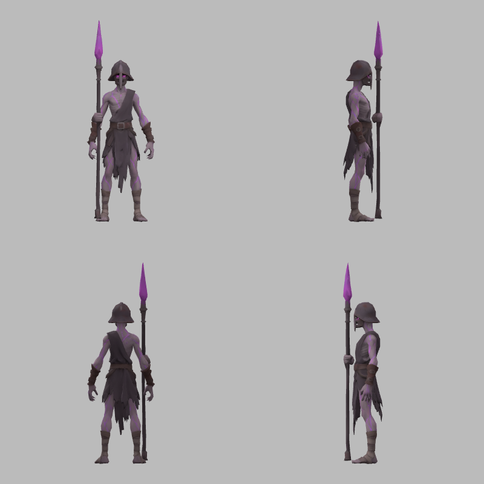

The Hollow Heart's ranged threat: your export, with a skeleton and eight moves added by hand. A gaunt grey-violet soldier in a dented kettle helm with a nose guard, a ragged tabard and bracers, violet veins under the skin and a long spear with a violet crystal head. It keeps its distance, then plants, locks its aim and marks an Ember lane 7 u long down the floor while it draws the spear back; when the lane is full the lance fills it at once and every hero still inside takes 10. The spear is gone from its hand and grows back from the veins. Press a move to watch it; the numbers under the page come from the model file.
Idle or Walk sets what it does between throws, and Going turns it on the spot. Lance plays the game's three throws in turn (over the shoulder, side-arm, then the two-handed plunge), each on its own full 7 u lane with the hero stand-in 4 u ahead on it, and repeats until you press it again. Hurt plays on top of anything. Death drops it: press it again and it spawns back. The bar names the part of the move that is playing, in the game's own words where it has them.

It came through as two pieces: the soldier, standing straight with the arms down, and the spear, held upright in the right hand with its butt on the floor. Thin grey-violet limbs with violet veins showing through, a dark kettle helm with a nose guard and glowing violet eyes under it, a sash across the chest, a belt, a ragged tabard to the knees, leather bracers and wrapped shins.
| Move | What it does | Timing |
|---|---|---|
| Idle | It breathes, the spear swaying a little in its grip, and turns its head one way, then the other. | Mine: a 4.4 s loop. |
| Walk | Long strides on its stilt legs, leaning into the travel, the free arm swinging and the spear carried upright. | Game: 1.5 u/s. The stride is mine: 0.85 s a cycle. |
| Turn left, turn right | Steps round on the spot, the head and chest leading. | 180° a second (mine: the game turns it at once). |
| Lance | The game's three throws, on its own key poses, one after another. Over the shoulder: it twists away and lifts the spear high behind its head, the off hand pointing down the lane. Side-arm: it twists further and draws the spear back low at its side. The plunge: both hands high, the spear pointed down the lane. Through the telegraph it holds the pose while the veins and the spearhead brighten and the lane fills; the thrust takes the last 2.5 frames. At the contact the spear is gone from its hand, the lance fills the lane and the hero takes 10; it holds 3 frames, snaps back and settles while the spear grows back in its hand. | Game: the 54-tick lane (0.9 s) each throw; strike 2.5 frames, hold 3, snap 3, settle 9 (at 30 a second); the spear back 0.12 to 0.62 s after the contact. The 0.35 s rest between throws is mine (the game waits 240 ticks). |
| Hurt | The chest rocks back and the head snaps up. Plays on top of any move. | 0.4 s |
| Spawn | Grows in, lifts the spear hand as the spear forms in it from the veins, and settles. | Game: grow in 7 frames, about 10% over. The rest is mine. |
| Death | Struck, it rocks back; the spear crumbles out of its hand, the stilt legs fold and it drops to its knees, then topples forward onto its face and lies still. | Mine: 2.2 s, then it stays down. The game pops every foe where it is. |
| What was measured, on every frame of every move | Result |
|---|---|
| Feet sliding while planted (walk, both turns, the throws) | 0 mm |
| Loops that jump when they restart (idle, walk, both turns) | 0 |
| Anything through the floor, the spear included | Nothing, on any frame of any move. |
| Lying dead | On the floor, not in it: its lowest point measured on every frame of the fall (6 mm above at worst). |
These numbers come from the model file. I checked the poses as still frames only: the cloud machine cannot play the page at full speed, so the throws and the fall are yours to judge.